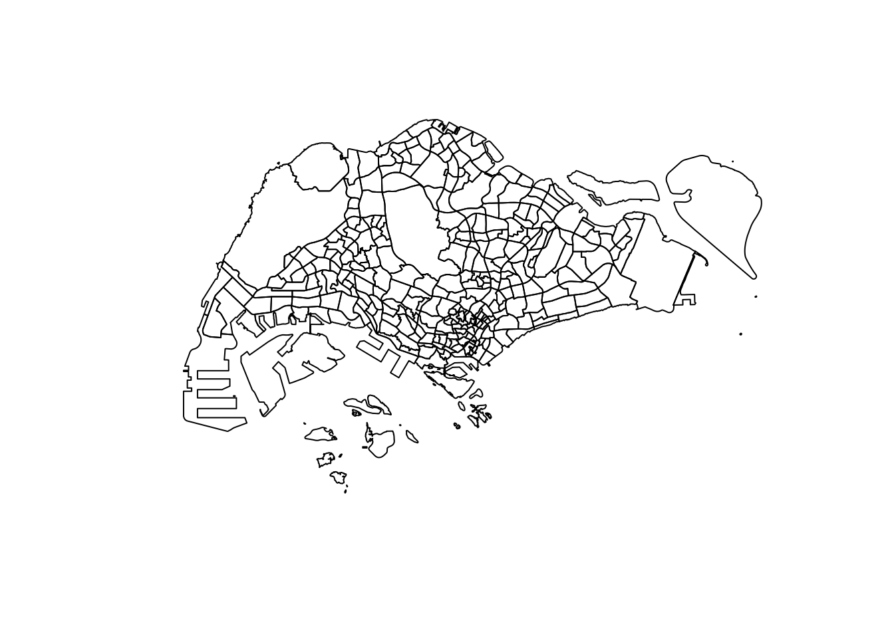

pacman::p_load(knitr, mapview, spdep, tmap, tidyverse, sf)Geospatial Analytics for Public Good
1.1 Overview
1.2 Load packages
1.3 Import data
odbus08 = read_csv("data/origin_destination_bus_202308.csv")
odbus08$ORIGIN_PT_CODE <- as.factor(odbus08$ORIGIN_PT_CODE)
odbus08$DESTINATION_PT_CODE <- as.factor(odbus08$DESTINATION_PT_CODE)
glimpse(odbus08)Rows: 5,709,512
Columns: 7
$ YEAR_MONTH <chr> "2023-08", "2023-08", "2023-08", "2023-08", "2023-…
$ DAY_TYPE <chr> "WEEKDAY", "WEEKENDS/HOLIDAY", "WEEKENDS/HOLIDAY",…
$ TIME_PER_HOUR <dbl> 16, 16, 14, 14, 17, 17, 17, 17, 7, 17, 14, 10, 10,…
$ PT_TYPE <chr> "BUS", "BUS", "BUS", "BUS", "BUS", "BUS", "BUS", "…
$ ORIGIN_PT_CODE <fct> 04168, 04168, 80119, 80119, 44069, 44069, 20281, 2…
$ DESTINATION_PT_CODE <fct> 10051, 10051, 90079, 90079, 17229, 17229, 20141, 2…
$ TOTAL_TRIPS <dbl> 7, 2, 3, 10, 5, 4, 3, 22, 3, 3, 7, 1, 3, 1, 3, 1, …odbus09 = read_csv("data/origin_destination_bus_202309.csv")
odbus09$ORIGIN_PT_CODE <- as.factor(odbus09$ORIGIN_PT_CODE)
odbus09$DESTINATION_PT_CODE <- as.factor(odbus09$DESTINATION_PT_CODE)
glimpse(odbus09)Rows: 5,714,196
Columns: 7
$ YEAR_MONTH <chr> "2023-09", "2023-09", "2023-09", "2023-09", "2023-…
$ DAY_TYPE <chr> "WEEKENDS/HOLIDAY", "WEEKENDS/HOLIDAY", "WEEKDAY",…
$ TIME_PER_HOUR <dbl> 17, 10, 10, 7, 7, 11, 16, 16, 16, 20, 7, 11, 11, 1…
$ PT_TYPE <chr> "BUS", "BUS", "BUS", "BUS", "BUS", "BUS", "BUS", "…
$ ORIGIN_PT_CODE <fct> 24499, 65239, 65239, 23519, 23519, 52509, 03151, 5…
$ DESTINATION_PT_CODE <fct> 22221, 65159, 65159, 23311, 23311, 42041, 11161, 5…
$ TOTAL_TRIPS <dbl> 1, 9, 2, 6, 1, 2, 18, 3, 2, 1, 2, 5, 3, 5, 5, 19, …odbus10 = read_csv("data/origin_destination_bus_202310.csv")
odbus10$ORIGIN_PT_CODE <- as.factor(odbus10$ORIGIN_PT_CODE)
odbus10$DESTINATION_PT_CODE <- as.factor(odbus10$DESTINATION_PT_CODE)
glimpse(odbus10)Rows: 5,694,297
Columns: 7
$ YEAR_MONTH <chr> "2023-10", "2023-10", "2023-10", "2023-10", "2023-…
$ DAY_TYPE <chr> "WEEKENDS/HOLIDAY", "WEEKDAY", "WEEKENDS/HOLIDAY",…
$ TIME_PER_HOUR <dbl> 16, 16, 14, 14, 17, 17, 17, 7, 14, 14, 10, 20, 20,…
$ PT_TYPE <chr> "BUS", "BUS", "BUS", "BUS", "BUS", "BUS", "BUS", "…
$ ORIGIN_PT_CODE <fct> 04168, 04168, 80119, 80119, 44069, 20281, 20281, 1…
$ DESTINATION_PT_CODE <fct> 10051, 10051, 90079, 90079, 17229, 20141, 20141, 1…
$ TOTAL_TRIPS <dbl> 3, 5, 3, 5, 4, 1, 24, 2, 1, 7, 3, 2, 5, 1, 1, 1, 1…Master Plan 2019 Subzone Boundary
The Master Plan is a forward looking guiding plan for Singapore’s development in the medium term over the next 10 to 15 years. To facilitate urban planning, the Urban Redevelopment Authority (URA) divides Singapore into regions, planning areas and subzones. Subzones are divisions within a planning area which are usually centred around a focal point such as neighbourhood centre or activity node.
hexagon is a hexagon layer of 250m (this distance is the perpendicular distance between the centre of the hexagon and its edges.) should be used to replace the relative coarse and irregular Master Plan 2019 Planning Sub-zone GIS data set of URA.
Source: URA (Download here)
New Package
Using st_read() to import the new file returns an error: ‘Error in CPL_get_z_range(obj, 3) : z error - expecting three columns’ sf expects a 3D geometry (X, Y, Z coordinates) but the file being read only contains 2D geometries (X and Y coordinates).
To resolve, we use geojsonsf to convert GeoJSON and simple feature objects.
mpsz_2019 <- geojsonsf::geojson_sf("data/MasterPlan2019SubzoneBoundaryNoSeaGEOJSON.geojson")
glimpse(mpsz_2019)Rows: 332
Columns: 3
$ Name <chr> "kml_1", "kml_2", "kml_3", "kml_4", "kml_5", "kml_6", "kml…
$ Description <chr> "<center><table><tr><th colspan='2' align='center'><em>Att…
$ geometry <GEOMETRY [°]> POLYGON Z ((103.8145 1.2823..., POLYGON Z ((103.8…The output indicates that the geospatial objects are multipolygon features. There are 323 features and 15 fields. It is in SVY21 projected coordinates system with XY dimension.
mpsz_2019$geometry[[1]]# Create the hexagon grid
hexagon <- st_make_grid(mpsz_2019, cellsize = c(250, 250 * sqrt(3)),
what = "polygons",
square = FALSE)
# Convert the grid to an sf object
hexagon_sf <- st_sf(geometry = hexagon)
# Add a grid ID to each hexagon
hexagon_sf$grid_id <- seq_along(hexagon_sf$geometry)plot(st_geometry(mpsz_2019))
str(hexagon_sf)Classes 'sf' and 'data.frame': 3 obs. of 2 variables:
$ geometry:sfc_POLYGON of length 3; first list element: List of 1
..$ : num [1:7, 1:2] -21.4 -146.4 -146.4 -21.4 103.6 ...
.. ..- attr(*, "dimnames")=List of 2
.. .. ..$ : NULL
.. .. ..$ : chr [1:2] "y" "x"
..- attr(*, "class")= chr [1:3] "XY" "POLYGON" "sfg"
$ grid_id : int 1 2 3
- attr(*, "sf_column")= chr "geometry"
- attr(*, "agr")= Factor w/ 3 levels "constant","aggregate",..: NA
..- attr(*, "names")= chr "grid_id"mapview(hexagon_sf)1.4 Explore data
st_geometry(mpsz_2019)Geometry set for 332 features
Geometry type: GEOMETRY
Dimension: XYZ
Bounding box: xmin: 103.6057 ymin: 1.158699 xmax: 104.0885 ymax: 1.470775
z_range: zmin: 0 zmax: 0
Geodetic CRS: WGS 84
First 5 geometries:The output indicates that the geospatial objects are multipolygon features. There are 323 features and 15 fields. It is in SVY21 projected coordinates system with XY dimension.